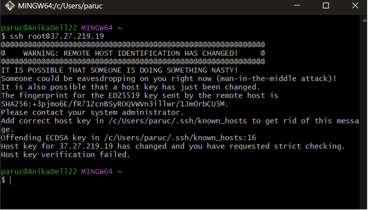
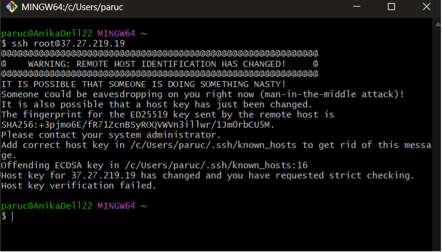
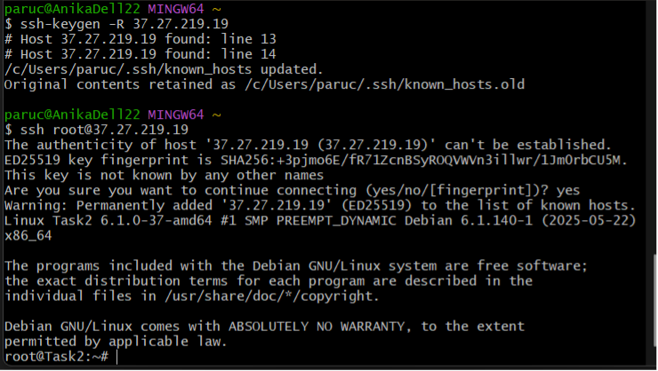

Excersise 2: Server Re-Creation
 

Why does this happen?
- When you first connected to your old server, SSH saved the host key (a kind of fingerprint) in the
~/.ssh/known_hostsfile. - After creating a completely new server, it now has a different host key.
- Since the IP address is the same but the key changed, SSH shows a warning: “WARNING: REMOTE HOST IDENTIFICATION HAS CHANGED!”
- This is a security feature that protects you from a man-in-the-middle attack.
How to solve this issue
 You need to remove the old key associated with the IP from your local known_hosts file.
- Run the following command (replace the IP with your server’s):
ssh-keygen -R 37.27.219.19- Try connecting to the server again via SSH:
ssh root@37.27.219.19-
You’ll be asked to confirm the new key:
-
Type yes and press Enter.
- The new key will automatically be saved in your
known_hosts.